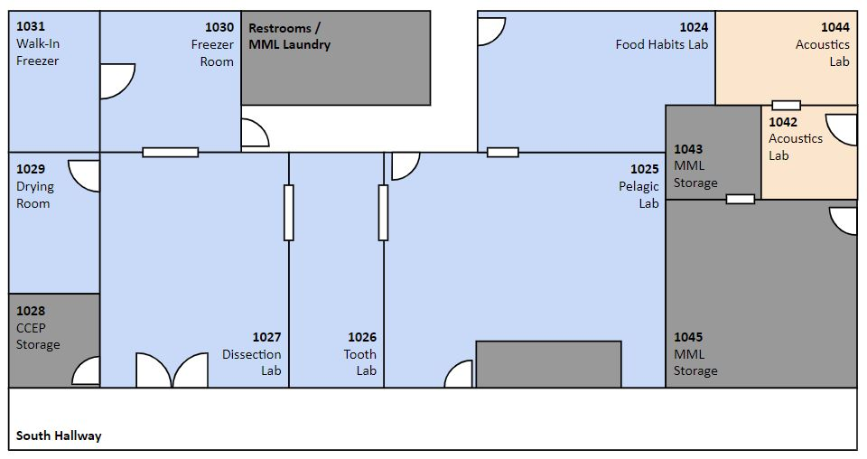
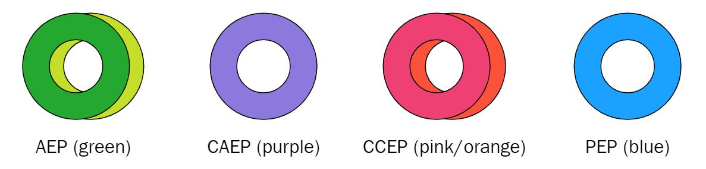

AFSC’s Safety and Environmental Compliance Office (SECO) maintains the Safety page on the intranet. Here, you’ll find information and services related to:
- Reporting an accident, injury, or illness
- The AFSC Chemical Hygiene Plan
- Safety Data Sheets (SDS)
- Safety training
- Etc.
Additional information and documents are available in the AFSC Safety folder on Google Drive.
MML Shared Labs

The MML Shared Labs are located on the first floor of Building 4. They are monitored by the Shared Labs Manager and one or more points of contact. Staff serving as POCs are responsible for the following:
- Complete Lab Safety Training provided by the AFSC Safety Office every 5 years.
- Conduct monthly safety inspections with their PL (Shared Labs Manager only).
- Resolve or coordinate the resolution of any safety issues identified by the safety inspections within 1 month of identification.
- Respond or coordinate the response to directives about lab spaces (e.g., Washington State Tier II chemical inventory, AFSC chemical inventory) accurately and on time.
- Resolve or coordinate the resolution of minor issues (e.g., unlabeled items in common areas, messes) identified by the Shared Labs Manager within 3 days of identification.
- Ensure that all chemical products and specimens in chemicals are labeled, stored, and disposed of according to NOAA and AFSC Safety Office guidelines.
- Other lab-related duties as assigned by AFSC Safety Office or MML leadership.
Remember to include the Shared Labs Manager on all communications about safety issues and lab directives, as well as minor lab issues.
| Katie Luxa (Shared Labs Manager) |
206-526-6316 |
| Tom Gelatt (Supervisor) |
206-526-4040 |
| Nancy Friday (Deputy Director) |
206-526-6266 |
| AFSC Safety Office |
206-526-4165, 206-526-4361 |
Requirements for Staff Working in Labs
Staff working in the Shared Labs must demonstrate that they have completed the following:
- AFSC Lab Safety training
- Read and understand the AFSC Chemical Hygiene Plan
- Lab orientation with Shared Labs Manager or Supervisor
- Ability to find AFSC MSDS/SDS online
- Read and understand relevant SOP(s)
- Training on specialized equipment (e.g., steam kettle, tooth sectioning saw) and use of collections (e.g., food habits reference collection), if applicable
Staff wishing to use the Shared Labs intermittently for non-lab tasks (e.g., gear cleaning) must demonstrate that they have completed the following:
General Lab Policies
- The Shared Labs are available to all staff and, at present, we do not require advance reservations to use them. However, to avoid potential scheduling conflicts, staff are highly encouraged to put their lab plans on the MML Shared Labs Google calendar.
- Ensure that all specimens, equipment, etc. are stored and labeled according to MML Shared Labs guidelines (see section below).
- Clean up after yourself! Please make sure program storage areas are organized and common areas are clean and clutter-free. Notify the Shared Labs Manager of any issues that require attention.
- No nitrile gloves outside of the labs. If you need to leave your workstation to go to your office or talk to someone, dispose of your gloves and get a new pair when you return.
- Turn on hood fans before working in the labs, especially if you are doing anything that might have a strong smell (e.g., using steam kettles, processing scats). Turn the dial to the maximum time. Control dials are located in the Food Habits and Tooth Labs.
- Dispose of lab waste in the proper receptacles (see section below).
- There is a 5-gallon carboy of 95% ethanol in the Dissection Lab that is available for all MML programs to share. If you notice the carboy is low/empty, ask the Shared Labs Manager to refill it.
- Working alone in the Shared Labs is not recommended. Notify your coworkers prior to working in the lab and ensure that at a minimum of 1 person - either nearby or available via call/text - is aware that the work is occurring. Never enter or work in a walk-in freezer without a (in-person or virtual) buddy.
JHAs and SOPs
Approved Job Hazard Analysis and Standard Operating Procedures documentation are required for all activities conducted in the MML Shared Labs. Create a workflow for this…
Storage and Labels
All hazardous materials in the labs must be labeled according to AFSC and OSHA guidelines. At minimum, this includes the chemical name and primary hazard (pictogram sticker). Unknown, unlabeled chemicals are a dangerous and expensive hazard. They cannot be disposed of until they are identified and tests cost approximately $800 per sample. Pictogram stickers are available from the Shared Labs Manager or AFSC SECO.
Non-hazardous items should also be clearly labeled with a contact name or program and a description of the item (e.g., SSL scats). For walk-in freezer items, paper tags, Sharpies, and color-coded flagging tape are available in the Freezer Room. Color-coded masking tape (for cabinet doors) is available from the Shared Labs Manager.

Hazardous materials must be stored in appropriate containers and locations. For example:
- Only store compatible materials together (e.g., flammables with flammables).
- No liquid hazards may be stored above eye level.
- Corrosives must be stored in a secondary container.
Other items should be stored in your program’s designated area(s) of the labs or freezers. Storage is defined as anything that will not be in use within the next week. Items left in common areas will be reported to lab POCs.
Chemical Inventories and Reporting
MML must maintain a detailed inventory of all chemicals used and stored in the field, offices, and storage areas. The inventory is for chemical products only, not specimens stored in chemicals - although your program should keep an inventory of such items for the Tier II Report (see below).
The Shared Labs Manager is responsible for reviewing the MML chemical inventory and updating this information in the AFSC Chemical Inventory. This must be done at least annually. Create a workflow for this…
Washington State Tier II Hazardous Chemical Reporting
Each January, AFSC must report totals of ethanol, formaldehyde, and sulfuric acid to the State. This report includes chemical products as well as specimens stored in chemicals. In Nov-Dec, the Shared Labs Manager will reach out to programs about inventory these resources, and compile a summary report for AFSC SECO.
Formalin Reporting
We are also required to report all new purchases of formalin or formaldehyde to AFSC SECO. Please notify the Shared Labs Manager if you buy these chemicals.
Freezers
MML has 2 large walk-in freezers, 1 mini fridge, 1 commercial standing freezer, and 4 ultra-low standing freezers. Freezers are for biological specimens only - absolutely no food or beverages are allowed. Emergency contacts are posted on the door of each unit.
| -40° (#1) |
AEP |
Freezer Room |
Genetic samples |
| -80° (#2) |
PEP & AEP |
Freezer Room |
PEP blood and genetics samples, AEP blood samples |
| -40° (#3) |
CCEP |
Freezer Room |
Blood and genetic samples |
| -80° (#4) |
AEP |
Freezer Room |
Blood samples |
| -20° (standing) |
CCEP |
Tooth Lab |
??? |
| -20° (walk-in) |
Shared |
Freezer Room |
Diet and tissue samples, etc. |
| -20° (walk-in) |
Shared |
Bldg 32 |
Diet and tissue samples, etc. |
| Mini-fridge |
Shared |
Pelagic Lab |
Sample controls |
Reminders:
- Do not store samples in another program’s freezer without their express permission.
- Never put dry ice in the walk-in freezers - this is a suffocation hazard.
- Be sure that freezer doors are firmly closed when you’re done.
- Protect your hands when working with samples in/from the ultra-low freezers.
- If you are shipping frozen samples, there are extra cold packs in the Bldg 4 walk-in and some insulated boxes under the counter.
Cleaning and Waste Disposal
Please clean up after yourself in the labs. There are loads of cleaning supplies and tools available to you.
- Scrub or wipe down surfaces.
- Put away supplies, tools, and equipment.
- Dispose of waste in the appropriate receptable (see below).
- Make sure anything you leave in a common space is well-labeled.
- If working in a sink, pouring off excess liquids from a bucket, or emptying a steam kettle, use a drain catcher or metal sieve to catch solids.
- For bigger messes in the Dissection Lab, you can hose down surfaces and clean with Simple Green or another disinfectant. Waste water can go into the floor drains marked SEWER (you can use the small plastic broom and floor squeegee). Do not use the drains marked BLOOD!
| Biowaste |
Solid organic matter (e.g., tissue, bone, etc.) should be collected in the Building 4 walk-in freezer. There are two large garbage cans on casters for this purpose. Absolutely no trash or plastic, and no tissues preserved in chemicals (e.g., ethanol, formalin). Do not fill bins more than 3/4 full. If needed, put excess waste in a 5-gallon bucket with a lid. Note: There is no longer a waste receptacle in the Building 32 walk-in - if this is something you need, contact the Shared Labs Manager. |
| Chemicals |
There are glass jars on the counter in the Pelagic Lab for collecting waste alcohol, DMSO, and formalin. If you need a new container, grab an empty jar from the “ref collection glassware” cabinet; be sure to label it appropriately. Never dispose of chemicals in sinks or floor drains - even highly diluted ethanol! |
| Broken glass |
There is a broken glass bucket located in the Dissection Lab. Never put broken glass in the garbage or sharps containers. |
| Sharps |
Used scalpels, needles, and other sharps go in the yellow/red plastic biohazard containers - there are several located throughout the labs. |
| Batteries |
Dead batteries go in the Universal Waste boxes in the MML Copy Room. |
The Shared Labs Manager will monitor biowaste receptables and coordinate pick-up/disposal by Baker Commodities (rendering plant). Otherwise, if you see that a waste receptacle is full, fill out the AFSC Waste Pickup Form. Please note that there is a Center-wide monthly limit on formalin/formaldehyde disposal. If you need to dispose of large amounts of these chemicals, please coordinate with SECO before you begin.
Other Shared Labs Resources
- Electric chain hoist
- Steam kettles (2)
- Dissecting microscopes
- Ultrasonic cleaner (small)
- Digital scales…
- Tooth saw…
- Tooth grinder…
- Freezing microtome…
At this time, there is not a chemical fume hood available in the Shared Labs. Options include the hood in the MML Tech Lab (typically used for charging UAS batteries) or the REFM Food Habits Lab (contact Geoff Lang and Rick Hibpshman).
Field Safety
MML Training Database
The lab keeps track of fieldwork training completed by all personnel in a MML Training Database. The database is organized by Program and maintained by the MML Operations team. To update your information, email a copy of your training certificate to Jim Freed (james.freed@noaa.gov).
Aviation Safety
{{< video https://www.youtube.com/watch?v=gATvx8dGkho>}}
NOAA’s Office of Marine and Aviation Operations (OMAO) governs the Aviation Safety Program which provides policy and guidance to support the safe operation and use of aircraft.
An overview of all safety-related training that is required or recommended for MML staff and affiliates is detailed in the MML Safety Training Memo. Training specific to aerial surveys is outlined in bullet 4 of the memo and included below.
All participants in NOAA aerial surveys must complete the following:
| Aviation Egress |
every 5 years |
every 3 years |
|
| Helicopter Emergency Egress Device (HEED) |
every 5 years |
|
Can be combined with Aviation Egress.
Only need if carrying a HEED device. |
| Aviation Safety & Cold Weather Survival |
every 5 years |
every 3 years |
Topics are covered in and combined with Aviation Egress. |
| Egress Videos |
annually |
|
2.5 hours of material |
| Online Commerce Learning Center (CLC) Courses |
annually |
|
Recommended for contracted transport flights to/from remote field sites.
The three aviation courses include: 1) NOAA Aviation Policy & Procedures, 2) Basic Aviation Safety & Survival, and 3) Aviation Health. |
Aviation Safety Equipment
This section provides a centralized place for personnel to find information about aviation safety equipment that is shared among MML Programs. It includes information about aviation safety equipment inventory, usage, and maintenance.
Relevant Acronyms
- AOC - Aircraft Operations Center
- ELT - emergency location transmitter
- HEED - helicopter emergency egress device (compressed air bottle)
- OMAO - Office of Marine and Aviation Operations
- PFD - personal floatation device
- PLB - personal locator beacon
Equipment
When flying on aircraft owned by NOAA’s AOC, you will only need to supply your own aviation drysuit. The following safety gear is usually provided by AOC: immersion (gumby) suits, PFDs, HEEDs, and PLBs. Additionally, the aircraft is equipped with a liferaft, first aid kit, fire containment kit (for laptop fires, etc.), fire extinguishers, and ELTs. Check with your AOC Programs liaison to verify what equipment will be provided for your project.
When flying on other aircraft, contact the vendor to verify what equipment they provide versus what equipment you need to supply yourself.
Aviation drysuits
The Lab’s aviation drysuits are currently located in the MML cage in Building 32. Contact your Program Leader for access to the cage.
The aviation drysuits are inventoried in the AerialDrySuitDatabase.accdb on the LAN (/Programs_Share/NMML_Documents/Aviation_Equipment_&_Training/Aerial Dry Suits). Contact Christy Sims if you have updates for the database (christy.sims@noaa.gov).
Check-out procedures
To reserve aviation drysuits for a project, use the Aviation Drysuit Schedule to see which drysuits are available and hold them for specific dates. Use the previous year’s tab to see reservation conventions for various projects.
Contact Christy Sims with your reservation request. She will make the appropriate updates to the database. During check-out and check-in, visually inspect each suit for the following: condition of rubber neck seal, condition of rubber wrist seals, condition of foot seams, fleece liner present, hood present, gloves present, and neck ring present.
Keep track of the number of days each suit is worn during your project as well as any issues or repairs needed. Provide this information when you return your suit. This information is tracked to determine maintenance needs.
Maintenance
- Aviation drysuits are expensive; please handle with care.
- Regularly wax zippers.
- Use talcum or baby powder around rubber seals to keep material pliable and reduce tearing.
- Add washing procedures?
Immersion (Gumby) Suits
PFDs and Accessories
HEEDs
PLBs
Each Program in MML manages their own PLBs. Maintanence of PLBs includes keeping registration up-to-date, testing and replacing batteries, and following regular servicing schedules. Points of contact for PLB management in each Program are below.
| AEP |
Katie Luxa |
katie.luxa@noaa.gov |
| CAEP |
|
|
| PEP |
Heather Ziel |
heather.ziel@noaa.gov |
Helmets
When chartering helicopters, verify with the vendor or operator whether helmets are provided. When using fixed-wing aircraft, helmets are optional but may be used as an added safety precaution during takeoffs and landings. PEP has several helmets in its Program inventory. Contact John Jansen (john.jansen@noaa.gov) for more information.
Boating Safety Equipment & Training
Any other field safety topics…